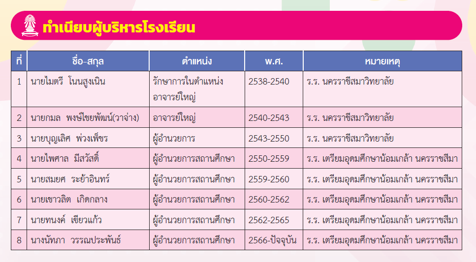
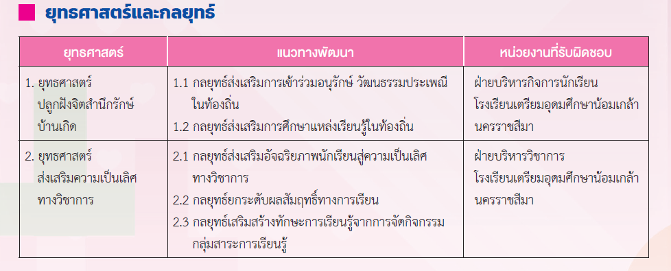
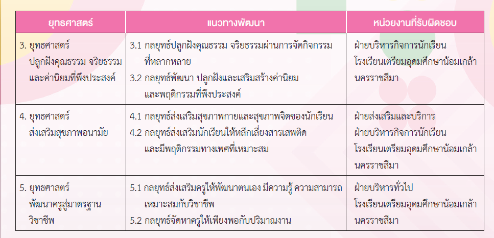
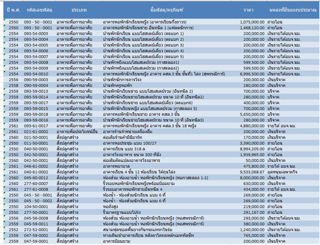
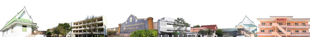

ประวัติโรงเรียน และความร่วมมือทางวิชาการ (MOU)
พัฒนาการตั้งแต่ พ.ศ. 2538 จนถึงปัจจุบัน
โรงเรียนเตรียมอุดมศึกษาน้อมเกล้า นครราชสีมา เดิมชื่อ โรงเรียนนครราชสีมาวิทยาลัย ก่อตั้งเมื่อปี พ.ศ. 2538 สังกัดกรมสามัญศึกษา กระทรวงศึกษาธิการ เป็นโรงเรียนที่สร้างขึ้นโดยมีจุดประสงค์เพื่อจะให้เป็นศูนย์กลางทางการศึกษาของจังหวัดนครราชสีมา ที่มีภารกิจด้านการจัดการศึกษาในระดับมัธยมศึกษาตอนต้น และระดับมัธยมศึกษาตอนปลาย และในปี พ.ศ. 2547 มีการปรับปรุงโครงสร้างการศึกษา จึงได้ย้ายมาสังกัดสำนักงานเขตพื้นที่การศึกษานครราชสีมา เขต 1 ต่อมามีนโยบายด้านการศึกษาของภาครัฐที่มีการกระจายอำนาจให้องค์กรปกครองส่วนท้องถิ่น มีสิทธิในการจัดการศึกษาตามความพร้อมและความต้องการ โรงเรียนนครราชสีมาวิทยาลัย จึงได้ถ่ายโอนไปสังกัดองค์การบริหารส่วนจังหวัดนครราชสีมา เมื่อวันที่ 1 พฤศจิกายน 2550
ต่อมา องค์การบริหารส่วนจังหวัดนครราชสีมา มีนโยบายด้านการศึกษาโดยจะจัดตั้งโรงเรียนนครราชสีมาวิทยาลัย ให้เป็นโรงเรียนมาตรฐานคุณภาพตัวอย่างของจังหวัดนครราชสีมา โดยจัดการศึกษาสำหรับนักเรียนที่มีความสามารถพิเศษในด้านต่าง ๆ ในระดับมัธยมศึกษาตอนปลาย ให้มีคุณภาพมาตรฐานโดยเป็นการจัดการศึกษาของท้องถิ่น เพื่อให้โอกาสนักเรียนที่มีศักยภาพสูงในจังหวัดนครราชสีมาให้มีโอกาสเท่าเทียมกัน ทั้งนี้ องค์การบริหารส่วนจังหวัดนครราชสีมา โดยความเห็นชอบของคณะกรรมการสถานศึกษาขั้นพื้นฐาน โรงเรียนเตรียมอุดมศึกษาน้อมเกล้า และคณะกรรมการจัดตั้งโรงเรียนนครราชสีมาวิทยาลัย ได้เสนอขอใช้ชื่อโรงเรียนไปยังโรงเรียนเตรียมอุดมศึกษาน้อมเกล้า ถนนรามคำแหง เขตสะพานสูง กรุงเทพฯ เพื่อขอเปลี่ยนชื่อโรงเรียน ได้รับอนุญาตให้ใช้ชื่อโรงเรียนเป็น โรงเรียนเตรียมอุดมศึกษาน้อมเกล้า นครราชสีมา เมื่อวันที่ 9 มกราคม 2552 และเริ่มรับนักเรียนที่มีความสามารถพิเศษโดยการสอบคัดเลือกนักเรียนเข้าเรียนต่อชั้นมัธยมศึกษาปีที่ 4 พร้อมทั้งงดรับนักเรียนระดับมัธยมศึกษาตอนต้น (ม.1) ตั้งแต่ปีการศึกษา 2552 เป็นต้นมา
ด้วยความมุ่งมั่นที่จะพัฒนาเยาวชนด้านการศึกษา โรงเรียนเตรียมอุดมศึกษาน้อมเกล้า นครราชสีมา จึงผลักดันอย่างเต็มกำลังในการพัฒนาโรงเรียนให้เป็นโรงเรียนมัธยมศึกษาต้นแบบขององค์การบริหารส่วนจังหวัดนครราชสีมา ที่เน้นการจัดการเรียนการสอนสู่ความเป็นเลิศด้านวิทยาศาสตร์ คณิตศาสตร์ เทคโนโลยีและความสามารถทางภาษา รวมทั้งจัดการศึกษาโดยมีเป้าหมายเพื่อพัฒนาผู้เรียน ให้เป็นคนดีมีคุณธรรม เป็นบุคคลแห่งการเรียนรู้ สอดคล้องกับปรัชญาทางการศึกษาของโรงเรียน คือ “เป็นเลิศวิชาการ สร้างสรรค์คุณธรรม” โดยได้รับการส่งเสริมและสนับสนุนด้านทรัพยากรและงบประมาณในการพัฒนาการศึกษาจากองค์การบริหารส่วนจังหวัดนครราชสีมาอย่างต่อเนื่อง
นอกจากนี้ โรงเรียนยังมีการจัดโครงการพิเศษต่าง ๆ ได้แก่ โครงการส่งเสริมการเรียนการสอนวิชาวิทยาศาสตร์และเทคโนโลยี โครงการส่งเสริมนักเรียนที่มีความสามารถพิเศษทางคณิตศาสตร์ โครงการส่งเสริมนักเรียนที่มีความสามารถพิเศษทางภาษา และโครงการพัฒนาท้องถิ่น อีกทั้งยังมีการลงนามความร่วมมือทางวิชาการ (MOU) ร่วมกับสถาบันอุดมศึกษาภายในประเทศ ได้แก่ มหาวิทยาลัยเทคโนโลยีสุรนารี มหาวิทยาลัยราชภัฏนครราชสีมา มหาวิทยาลัยราชมงคลอีสาน มหาวิทยาลัยวงษ์ชวลิตกุล และวิทยาลัยนาฏศิลป์นครราชสีมา และมีการลงนามความร่วมมือทางวิชาการร่วมกับสถาบันการศึกษาและองค์กรจากต่างประเทศ ได้แก่ สมาคมนักวิทยาศาสตร์รุ่นเยาว์แห่งอินโดนีเซีย (IYSA) ประเทศอินโดนีเซีย โรงเรียนมัธยมแวน โฮ ประเทศเวียดนาม และ องค์กรนักวิทยาศาสตร์รุ่นเยาว์แห่งมาเลเซีย (MYSO) ประเทศมาเลเซีย และในอนาคต โรงเรียนมีการวางแผนจะทำบันทึกข้อตกลงในการพัฒนาการศึกษาร่วมกับสถาบันการศึกษาอื่น ๆ เพิ่มเติมทั้งภายในประเทศและระดับนานาชาติ เพื่อพัฒนาศักยภาพสู่ความเป็นเลิศตามอัจฉริยภาพของนักเรียน
ข้อมูลทั่วไป อัตลักษณ์ และที่ตั้ง
ข้อมูลหลักของสถานศึกษา (อ้างอิงหน้าข้อมูลพื้นฐาน WP ปีการศึกษา 2567)
ตราสัญลักษณ์ประจำโรงเรียน : ตราพระเกี้ยว
ปรัชญา : ความเป็นเลิศทางวิชาการ และคุณธรรม
คติพจน์ : นิมิตฺตํ สาธุ รูปานํ กตญฺญูกตเวทิตา แปลว่า “ความกตัญญูกตเวที เป็นเครื่องหมายของคนดี”
วิสัยทัศน์ : สำนึกรักษ์บ้านเกิด เป็นเลิศวิชาการ สร้างสรรค์คุณธรรม ก้าวล้ำเทคโนโลยี
อัตลักษณ์ : ความเป็นเลิศทางวิชาการ
เอกลักษณ์ : หลักสูตรเข้มข้น บุคคลแห่งการเรียนรู้
สีประจำโรงเรียน :
- สีฟ้า หมายถึง ท้องฟ้ากว้างใหญ่ไพศาล ลูกเตรียมอุดมฯ เป็นผู้มีจิตใจกว้างขวาง เอื้อเฟื้อเผื่อแผ่มีน้ำใจไม่เห็นแก่ตัว ไม่ใจแคบ เป็นสีแห่งความสดใส เย็นตาน่ามอง ลูกเตรียมอุดมฯ เป็นผู้มีใจร่าเริง แจ่มใสสุภาพ อ่อนน้อม เป็นที่รักของทุกคน
- สีชมพู หมายถึง สีลูกพระเกี้ยว เป็นสีประจำโรงเรียนหลักของโรงเรียนเครือข่ายเตรียมอุดมศึกษาทั่วประเทศ
ต้นไม้ประจำโรงเรียน : ต้นชงโค เฟื่องฟ้า เป็นต้นไม้ที่ชอบแสงแดด และดูแลง่ายทนแล้งได้ดี ออกดอกตลอดทั้งปี โดยดอกมีสีสันสดใส เปรียบดังลูกเตรียมอุดมฯ ที่มีความอดทนต่ออุปสรรคอบรมสั่งสอนง่าย และมีความสดใสร่าเริง
ที่อยู่ : โรงเรียนเตรียมอุดมศึกษาน้อมเกล้า นครราชสีมา สังกัดองค์การบริหารส่วนจังหวัดนครราชสีมา มีเนื้อที่ ๘๗ ไร่ ๓ งาน ๗๕ ตารางวา ตั้งอยู่เลขที่ ๓๔๗ หมู่ที่ ๑๒ หมู่บ้านหนองรังกา ถนนโคกเพชร – หนองปลิง ตำบลโคกกรวด อำเภอเมือง จังหวัดนครราชสีมา รหัสไปรษณีย์ ๓๐๒๘๐ โทรศัพท์ ๐๔๔ – ๓๐๕๑๖๗ โทรสาร ๐๔๔ – ๓๐๕๑๖๘
ปีการศึกษา 2567 : จัดการเรียนการสอนระดับ ม.4 – ม.6 จำนวน 14 ห้องเรียน มี 3 แผนการเรียน ได้แก่ วิทยาศาสตร์ – คณิตศาสตร์, ภาษาต่างประเทศ และคอมพิวเตอร์ มีนักเรียน 450 คน คณะผู้บริหาร ครูและบุคลากรรวม 75 คน (ข้อมูลหน้าพื้นฐานปี 2567 ระบุผู้อำนวยการสถานศึกษา ได้แก่ นางนัทภา วรรณประพันธ์ วิทยฐานะ ผู้อำนวยการชำนาญการพิเศษ • ดูทำเนียบผู้บริหารและบุคลากรล่าสุดที่ โครงสร้างการบริหาร)
ช่องทางสื่อสาร : เว็บไซต์ www.tns.ac.th • อีเมล tns347m12@gmail.com • Facebook เตรียมน้อมฯโคราช
ทำเนียบผู้บริหาร ยุทธศาสตร์การพัฒนา และข้อมูลอาคารสถานที่
คลิกที่ภาพเพื่อขยายดูรายละเอียดเต็มขนาด





เพลงประจำสถาบัน และบทประพันธ์ประจำโรงเรียน
สามารถกดเล่นไฟล์เสียงเพลงมาร์ชประจำโรงเรียนได้ทันที